Output: [1, 9, 3, 2, 7, 8, 6, 5, 4]Explanation: We traverse the binary tree in the order of Left, Right then Root recursively resulting in the following traversal:
Output: [1 2 4 5 8 3 6 7 9 10] Explanation: We traverse the binary tree in the order of Left, Right then Root recursively resulting in the following traversal:
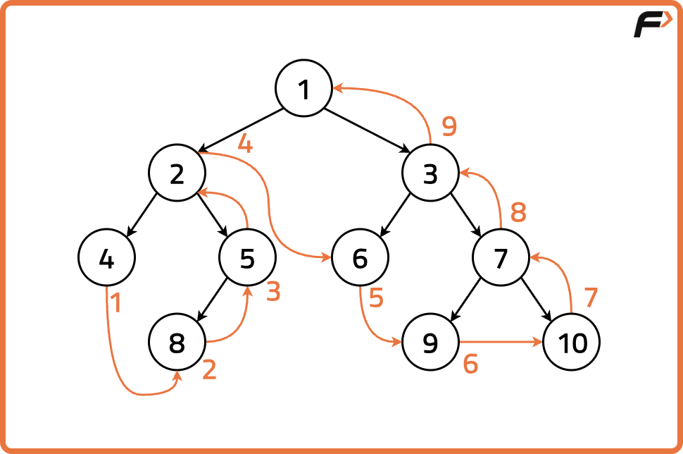
Disclaimer:
Here is the practice link to help you assess your knowledge better.
It's highly recommend trying to
solve it before looking at the solution.
Approach
Algorithm
Postorder traversal, another depth-first method in tree exploration, follows a sequence where the algorithm first explores the left subtree, then the right subtree, and finally visits the root node. In postorder traversal, we visit (or add to the array) the current node after traversing both its left and right subtrees.The sequence of steps in preorder traversal follows: Left, Right, Root.
Start at the root of the binary tree.
First, recursively traverse the entire left subtree.
Then, recursively traverse the entire right subtree.
Finally, process (visit) the current node.
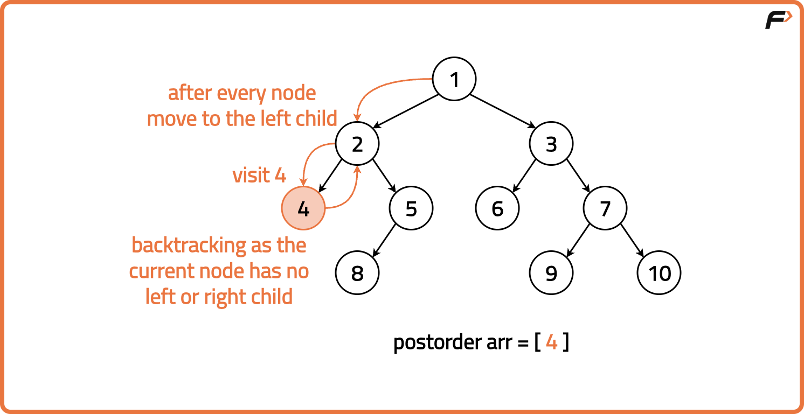
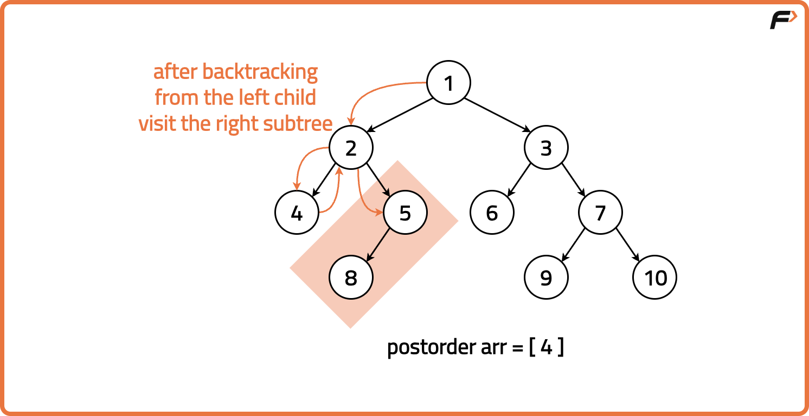
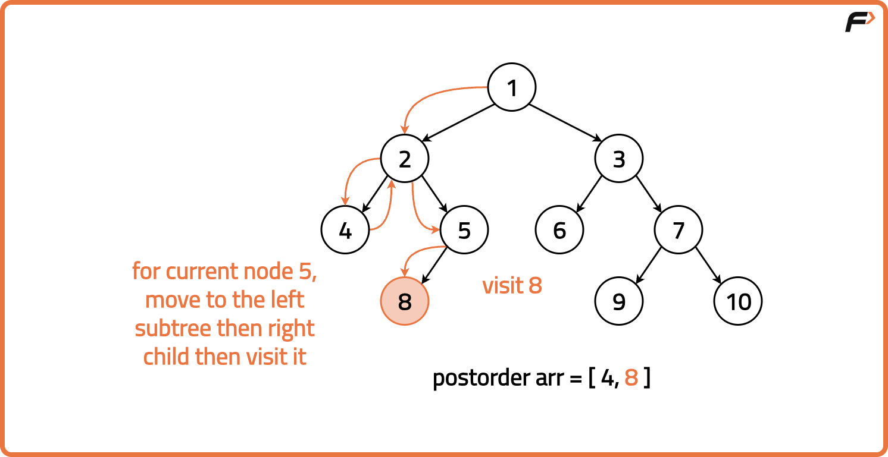
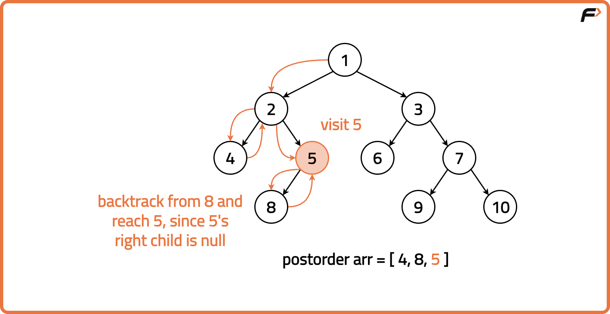
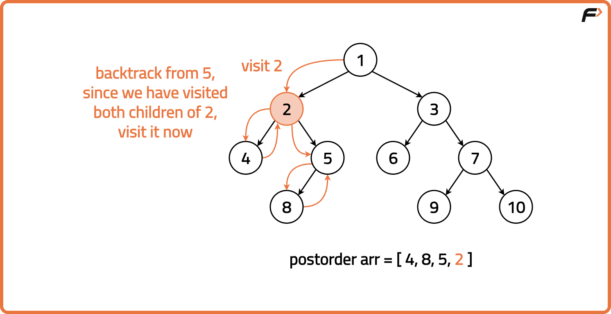
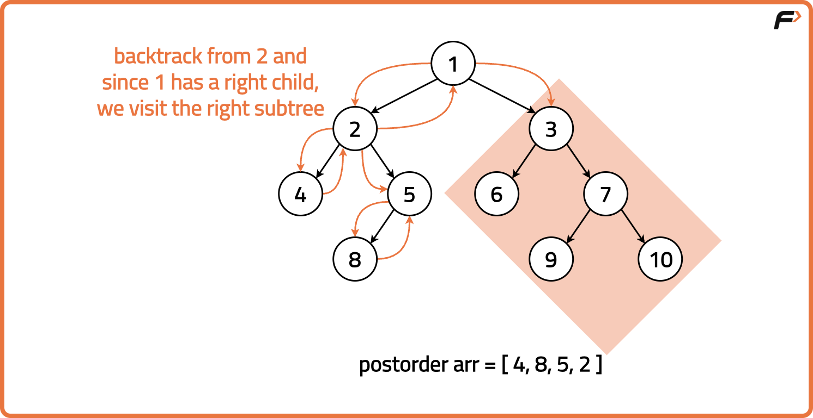
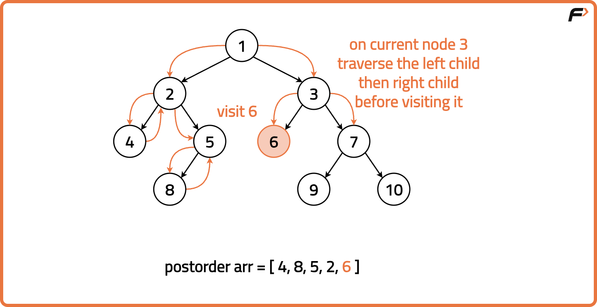
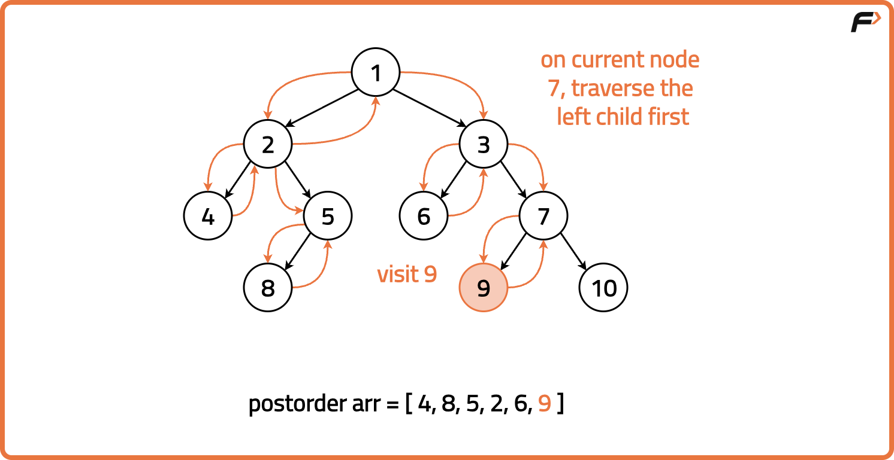
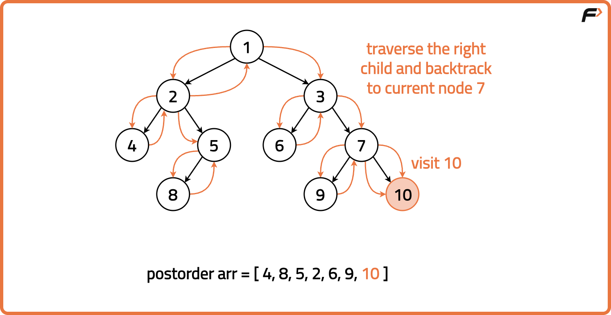
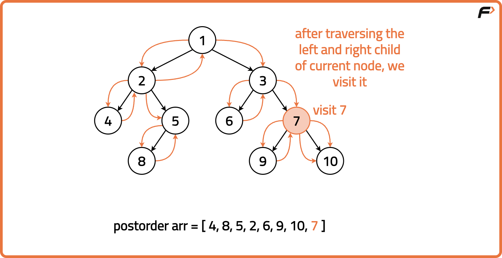
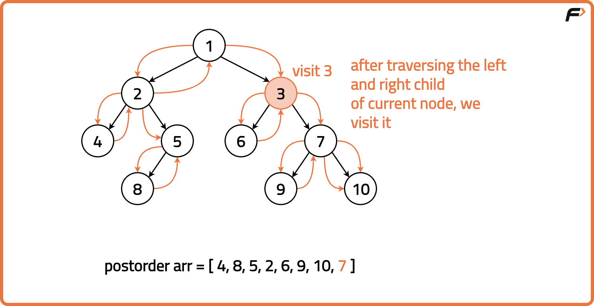
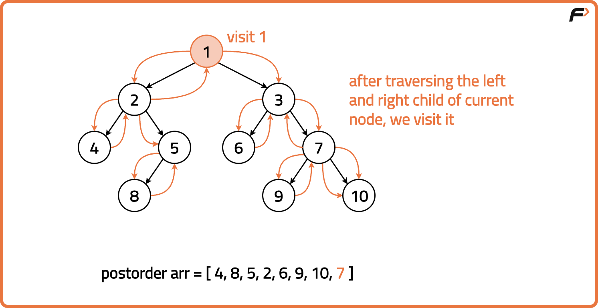
Code
#include <bits/stdc++.h>
using namespace std;
// Definition for a binary tree node
struct TreeNode {
int val;
TreeNode *left, *right;
TreeNode(int x) : val(x), left(NULL), right(NULL) {}
};
// Solution class with postorder function
class Solution {
public:
void postorderTraversal(TreeNode* root, vector<int>& result) {
// Base case: if node is null
if (!root) return;
// Traverse left subtree
postorderTraversal(root->left, result);
// Traverse right subtree
postorderTraversal(root->right, result);
// Add current node value
result.push_back(root->val);
}
};
// Main function
int main() {
// Build tree: 1
// / \
// 2 3
TreeNode* root = new TreeNode(1);
root->left = new TreeNode(2);
root->right = new TreeNode(3);
// Object of solution
Solution sol;
vector<int> result;
// Call postorder traversal
sol.postorderTraversal(root, result);
// Print result
for (int val : result) cout << val << " ";
return 0;
}
import java.util.*;
// Tree node definition
class TreeNode {
int val;
TreeNode left, right;
TreeNode(int x) { val = x; }
}
// Solution class with postorder function
class Solution {
public void postorderTraversal(TreeNode root, List<Integer> result) {
// Base case: if node is null
if (root == null) return;
// Traverse left subtree
postorderTraversal(root.left, result);
// Traverse right subtree
postorderTraversal(root.right, result);
// Add current node value
result.add(root.val);
}
}
// Main class
public class Main {
public static void main(String[] args) {
// Build tree: 1
// / \
// 2 3
TreeNode root = new TreeNode(1);
root.left = new TreeNode(2);
root.right = new TreeNode(3);
// Object of solution
Solution sol = new Solution();
List<Integer> result = new ArrayList<>();
// Call postorder traversal
sol.postorderTraversal(root, result);
// Print result
for (int val : result) System.out.print(val + " ");
}
}
# Tree node definition
class TreeNode:
def __init__(self, val=0, left=None, right=None):
self.val = val
self.left = left
self.right = right
# Solution class with postorder function
class Solution:
def postorderTraversal(self, root, result):
# Base case: if node is None
if not root:
return
# Traverse left subtree
self.postorderTraversal(root.left, result)
# Traverse right subtree
self.postorderTraversal(root.right, result)
# Add current node value
result.append(root.val)
# Main function
if __name__ == "__main__":
# Build tree: 1
# / \
# 2 3
root = TreeNode(1)
root.left = TreeNode(2)
root.right = TreeNode(3)
# Object of solution
sol = Solution()
result = []
# Call postorder traversal
sol.postorderTraversal(root, result)
# Print result
print(*result)
// Tree node definition
class TreeNode {
constructor(val, left = null, right = null) {
this.val = val;
this.left = left;
this.right = right;
}
}
// Solution class with postorder function
class Solution {
postorderTraversal(root, result) {
// Base case: if node is null
if (!root) return;
// Traverse left subtree
this.postorderTraversal(root.left, result);
// Traverse right subtree
this.postorderTraversal(root.right, result);
// Add current node value
result.push(root.val);
}
}
// Main function
const root = new TreeNode(1);
root.left = new TreeNode(2);
root.right = new TreeNode(3);
// Object of solution
const sol = new Solution();
const result = [];
// Call postorder traversal
sol.postorderTraversal(root, result);
// Print result
console.log(result.join(" "));
Complexity Analysis.
Time Complexity: O(N), we process each node once in traversal. Space Complexity: O(N), extra space used for storing post order traversal and recursion stack space.